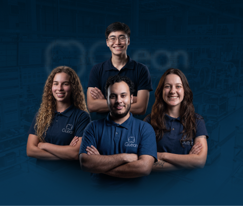
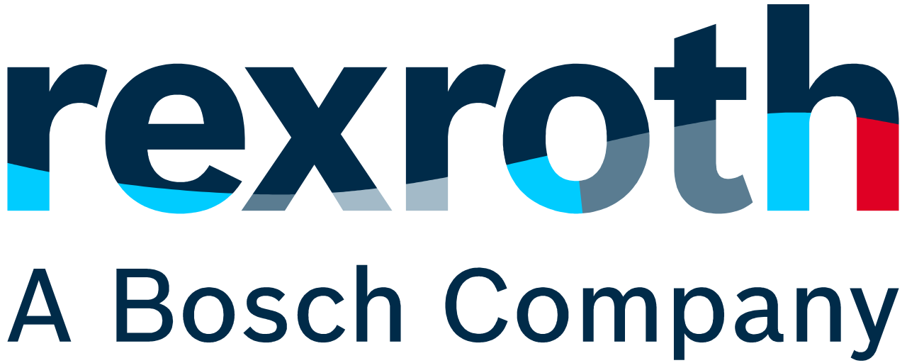
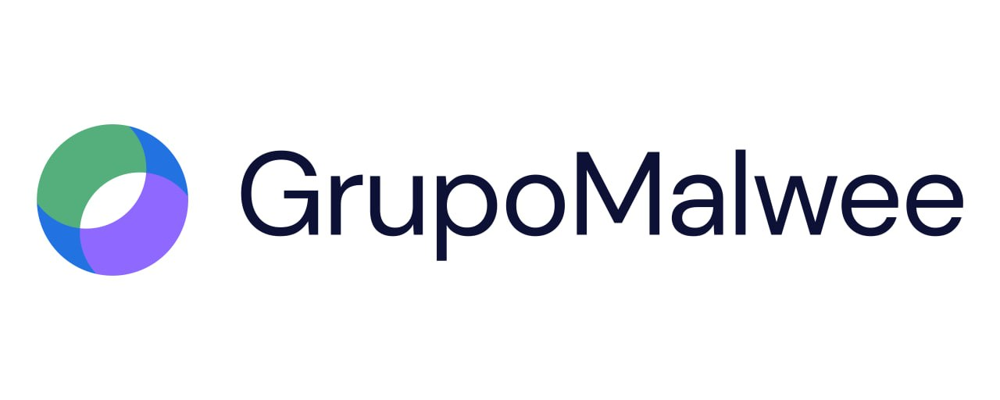

A partir da 3ª fase
As inscrições são para quem está da terceira fase em diante, de modo que a entrada no grupo acontece no quarto semestre.


Inscrições até 27/09O GLean é o grupo de estudos em Lean da UFSC. Aqui você aprende e aplica melhoria contínua em problemas reais e eleva a sua carreira para um outro patamar.
Encerramento das inscrições: 27 de setembro
Quatro etapas para você mostrar quem é e conhecer quem somos.
Sua inscrição começa aqui. Não esperamos experiência prévia em Lean, queremos entender sua trajetória e o que te move.
Você recebe um problema e estrutura a solução em uma página, no formato A3 que usamos no dia a dia. Enviamos o material de apoio: é para aprender, não para decorar.
Um desafio prático com outros candidatos. Olhamos como você pensa junto, escuta e constrói com o time.
Uma conversa com membros do grupo sobre você, suas expectativas e como o GLean se encaixa nos seus planos.
Se você se reconhece em alguma dessas linhas, o processo é para você.
As inscrições são para quem está da terceira fase em diante, de modo que a entrada no grupo acontece no quarto semestre.
Gente que olha uma fila, um desperdício ou um retrabalho e pensa "dá para fazer melhor". Esse incômodo é o começo de tudo.
Manufatura é o nosso principal campo de estudo, mas não o único: o Lean que praticamos alcança serviços, gestão e processos de qualquer natureza.
Não há restrição de curso. A diversidade de formações enriquece os projetos e a forma como o grupo enxerga cada problema.
Visitas técnicas, treinamentos e projetos construídos junto com quem pratica Lean na indústria.


O que o grupo deixou para quem já seguiu adiante.
Fazer parte da história do GLean é um orgulho e uma experiência que levarei para a vida. É emocionante ver o legado construído ao longo desses 20 anos e saber que cada geração continua transformando e fortalecendo essa história. 💙
Graças ao GLean pude alcançar o emprego dos meus sonhos. O grupo me capacitou para vencer grandes desafios e hoje colho os frutos do conhecimento adquirido ali.
O Glean me preparou para chegar no ambiente fabril e saber por onde começar. Aprendi a resolver problemas e desenvolvi uma visão diferenciada.
A rede que você passa a fazer parte no dia em que entra no grupo.
Não. A maior parte das pessoas chega sem nunca ter ouvido falar de A3, kanban ou kaizen. A formação acontece dentro do grupo.
De todos. O GLean é um grupo do departamento de Engenharia de Produção, mas o curso não é um critério considerado na seleção: qualquer estudante da graduação pode se inscrever, de qualquer curso.
A partir da 3ª fase, de forma que a entrada no grupo acontece no quarto semestre.
Além dos encontros do grupo, cada membro assume um horário de sede e participa dos projetos em andamento. A rotina é compatível com a graduação, mas exige constância.
A participação no grupo em si não é remunerada. Os membros, porém, desenvolvem projetos de verão e de inverno, que são remunerados. Ao longo do semestre também podem surgir projetos que, conforme a disponibilidade de cada um, podem ser remunerados.
As inscrições vão até 27 de setembro. Depois dessa data o formulário é encerrado.
Avisamos por e-mail a cada fase, no endereço informado na inscrição. Fique de olho também na caixa de spam.
O primeiro passo é só enviar seu currículo.
Fazer minha inscriçãoInscrições encerram em 27 de setembro